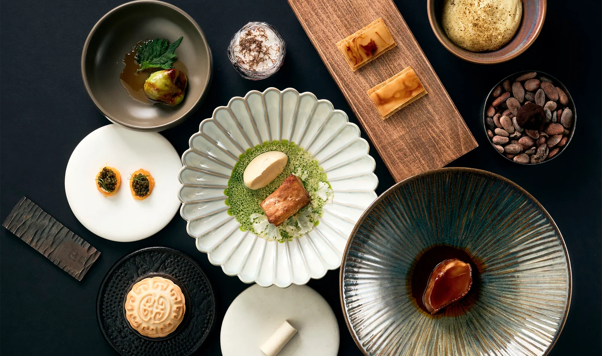
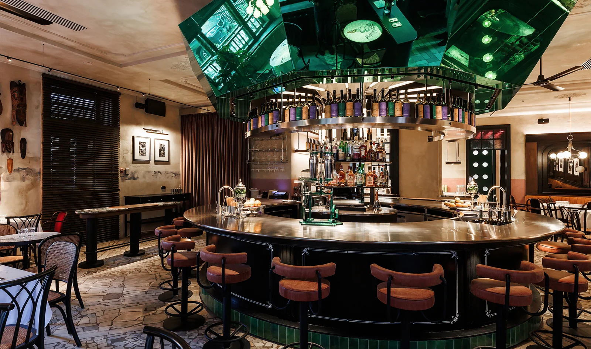
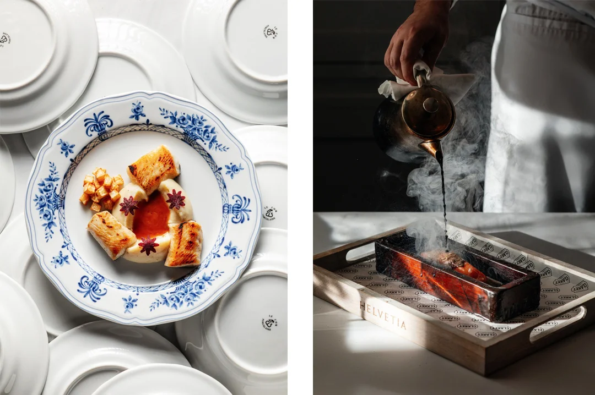
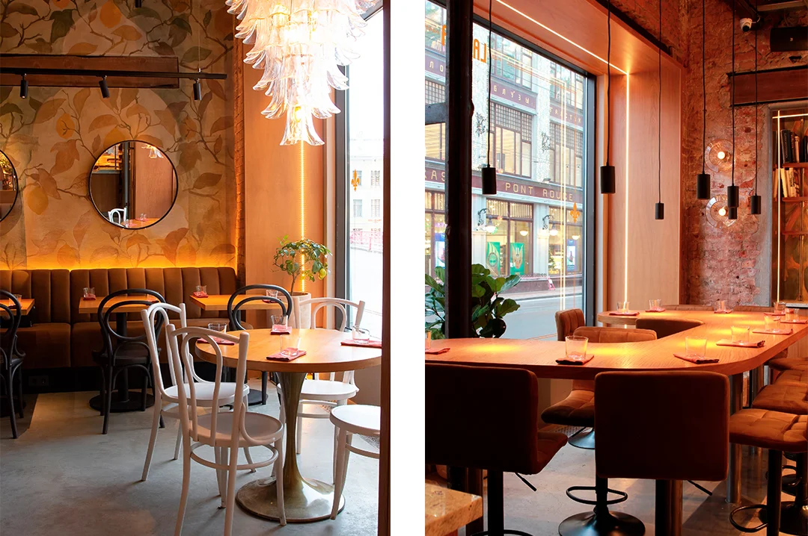
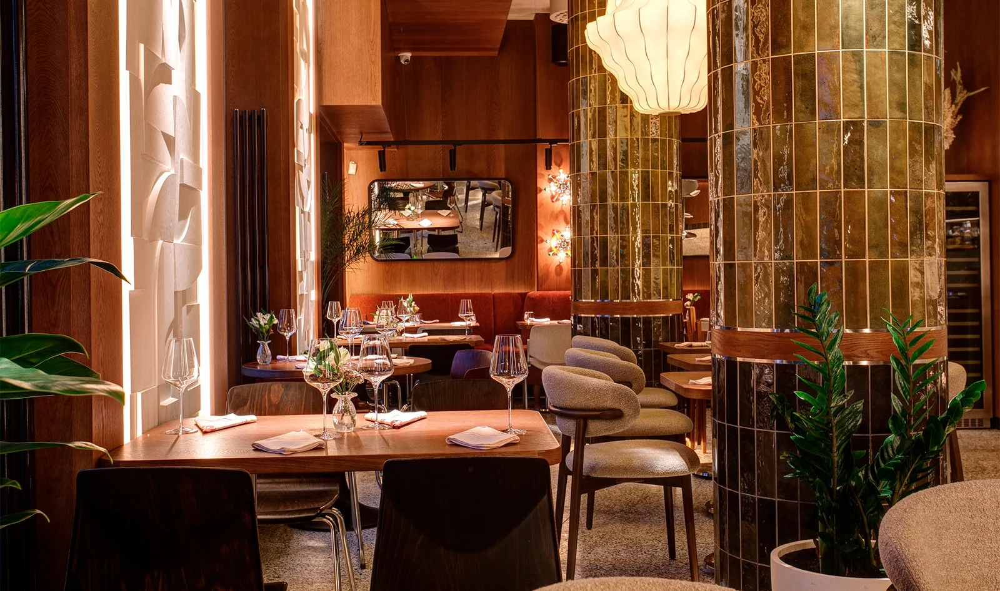

О-о-объедение: 6 авторских ресторанов Санкт-Петербурга с кухнями разных стран мира
Автор: Софья Власова
Гастрономическая подборка авторских ресторанов с разными национальными кухнями. Помогает выбрать направление для ужина и дополнить прогулку знакомством с ресторанной сценой города.
Читать полную статью на блоге Островка →



Фото: предоставлено пресс-службой ресторанаИсточник изображения


Фото: предоставлено пресс-службой ресторанаИсточник изображения





